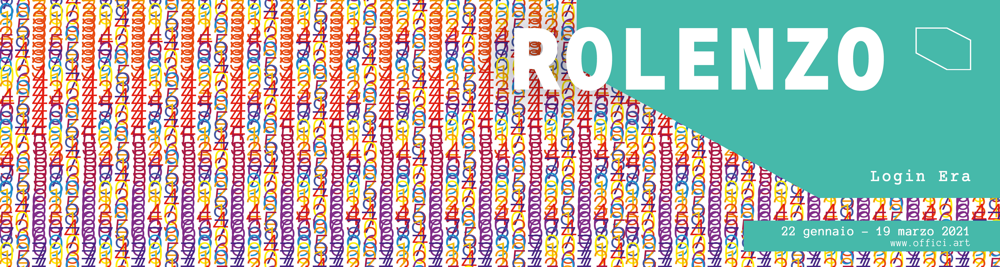
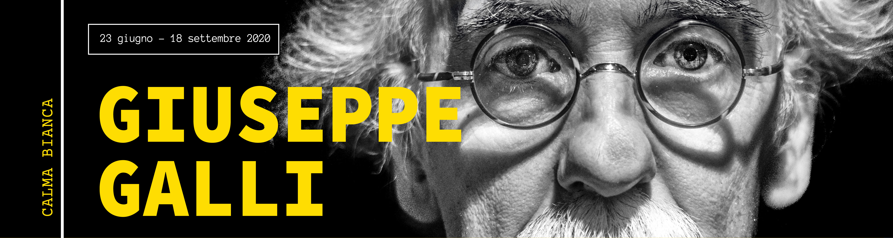

Opening 23 giugno - Opening 23 giugno - Opening 23 giugno - Opening 23 giugno - Opening 23 giugno -
Offici è un progetto eclettico che inserisce un piccolo spazio
artistico nel contesto lavorativo e nel quotidiano di tutti i
collaboratori, clienti, addetti ai lavori e partner che - ogni giorno -
hanno accesso agli uffici di AD Consulting Group, nella città di
Modena.
Un contenitore culturale temporaneo che vedrà giovani artisti alternarsi
ogni 60/90 giorni, selezionati e individuati grazie ad un Comitato
Artistico interno, con il supporto dell’architetto, designer e fotografo
Fausto Brozzi.
La scelta di portare la cultura in ambiti
tipicamente lavorativi permetterà a chiunque di usufruirne anche in modo
inconsapevole. Gratuito.
E in continua evoluzione.
Un progetto
ambizioso che ha lo scopo di arricchire le persone, dando colore non solo
agli spazi aziendali, ma offrendo uno stimolo di riflessione, di
ispirazione e creatività che solo l’arte è in grado di dare.
___
Il Gruppo AD Consulting, costituito a Modena nel 2011 con 5 sedi in Italia
e oltre 100 collaboratori, coniuga la propria solida competenza
tecnologica con servizi di consulenza organizzativa per le imprese. È una
realtà dinamica in grado di offrire e affiancarsi concretamente alle
aziende con un ampio ventaglio di soluzioni e servizi volti a sostenerle e
accompagnarle nei loro percorsi di innovazione e trasformazione digitale.
Con Euei, realtà dedicata all’ingegneria del software, si propone come
punto di riferimento sull’intero ambito ICT.
Grandi aree relax e spazi di lavoro non convenzionali in grado di
migliorare le interazioni tra i collaboratori e il pensiero laterale,
promuovendo la massima partecipazione creativa.
Offici.art
è uno dei progetti nati grazie allo sviluppo creativo delle persone di AD
Consulting Group.

